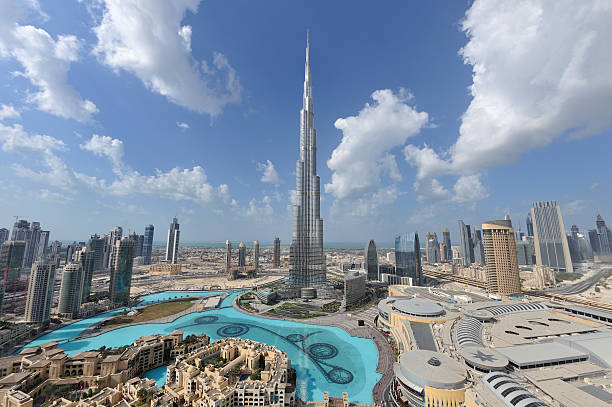
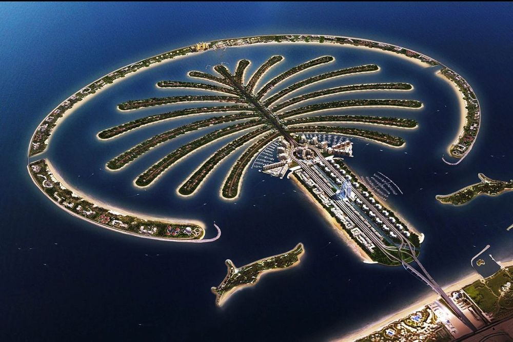

Dubai (/duːˈbaɪ/, doo-BY; Arabic: دبي, romanized: Dubayy, IPA: [dʊˈbajj], Gulf Arabic pronunciation: [dəˈbaj]) is the most populous city in the United Arab Emirates (UAE) and the capital of the Emirate of Dubai, the most populated of the 7 emirates of the United Arab Emirates.[7][8][9]
Established in the 19th century as a small fishing village, Dubai grew into a regional trading hub from the early 20th century and grew rapidly in the late 20th and early 21st century with a focus on tourism and luxury,[10] having the second most five-star hotels in the world,[11] and the tallest building in the world, the Burj Khalifa, which is 828 metres (2,717 ft) tall.[12]
Burj Khalifa

The Burj Khalifa[a] (known as the Burj Dubai prior to its inauguration in 2010) is a skyscraper in Dubai, United Arab Emirates. It is the world's tallest building. With a total height of 829.8 m (2,722 ft, or just over half a mile) and a roof height (excluding antenna, but including a 242.6 m spire[2]) of 828 m (2,717 ft), the Burj Khalifa has been the tallest structure and building in the world since its topping out in 2009, supplanting Taipei 101, the previous holder of that status.[3][4]
Construction of the Burj Khalifa began in 2004, with the exterior completed five years later in 2009. The primary structure is reinforced concrete and some of the structural steel for the building originated from the Palace of the Republic in East Berlin, the former East German parliament.[5] The building was opened in 2010 as part of a new development called Downtown Dubai. It was designed to be the centerpiece of large-scale, mixed-use development. The decision to construct the building was based on the government's decision to diversify from an oil-based economy, and for Dubai to gain international recognition.[citation needed] The building is named in honor of the former president of the United Arab Emirates, Khalifa bin Zayed Al Nahyan.[6] Abu Dhabi and the UAE government lent Dubai money to pay its debts. The building broke numerous height records, including its designation as the tallest building in the world.
Burj Khalifa was designed by a team led by Adrian Smith of Skidmore, Owings & Merrill, the firm that designed the Sears Tower in Chicago, a previous record holder for the world's tallest building. Hyder Consulting was chosen to be the supervising engineer with NORR Group Consultants International Limited chosen to supervise the architecture of the project. The design is derived from the Islamic architecture of the region, such as in the Great Mosque of Samarra. The Y-shaped tripartite floor geometry is designed to optimize residential and hotel space. A buttressed central core and wings are used to support the height of the building. Although this design was derived from Tower Palace III, the Burj Khalifa's central core houses all vertical transportation except egress stairs within each of the wings.[7] The structure also features a cladding system which is designed to withstand Dubai's hot summer temperatures. It contains a total of 57 elevators and 8 escalators.
At a certain point in the architectural and engineering process, the original Emaar developers experienced financial problems and required more money and economic funding. Sheikh Khalifa, the then-ruler of the United Arab Emirates, granted monetary aid and funding, hence the changing of the name from "Burj Dubai" to "Burj Khalifa". The concept of profitability derived from building high-density developments and malls around the landmark has proven successful. Its surrounding malls, hotels, and condominiums in Downtown Dubai have generated the most revenue from the project as a whole, while the Burj Khalifa itself made little or no profit.[8][9]
The critical reception of Burj Khalifa has been generally
positive, and the building has received many awards. Numerous complaints concern migrant
workers from South Asia, the primary building labour force, who were paid low wages and sometimes had their passports confiscated.[10]
Burj Al Arab
The Burj Al Arab (Arabic: برج العرب, Arab Tower) is a luxury hotel located in the city of Dubai, United Arab Emirates.[8] Developed and Managed by Jumeirah hotel group, it is one of the tallest hotels in the world, although 39% of its total height is made up of non-occupiable space.[9][10][11] Burj Al Arab stands on an artificial island that is 280 m (920 ft) from Jumeirah Beach and is connected to the mainland by a private curving bridge. The shape of the structure is designed to resemble the sail of a ship. It has a helipad
near the roof, at a height of 210 m (689 ft) above ground.
Palm Jumeirah

The Palm Jumeirah is an archipelago of artificial islands on the Persian Gulf in Jumeirah, Dubai, United Arab Emirates. It is part of a larger series of developments called the Palm Islands, including Palm Jebel Ali and Palm Deira, which, if completed, will together increase Dubai's shoreline by a total of 520 kilometres (320 mi).[1] It has an estimated population of at least 10,000 as of 2017.[2][needs update]
The islands were created using land reclamation. The construction was done as a joint venture by two Dutch specialist companies, Van Oord and Boskalis. The same companies also created The World. The recently opened destinations The Pointe, Club Vista Mare
and Nakheel Mall are the latest additions to Palm Jumeirah.[3]
The Palm Jumeirah Monorail, 5.4-kilometre-long (3.4 mi) monorail connecting the Atlantis Hotel to the Gateway Towers at the foot of the island.[4][5] The monorail connects The Palm Jumeirah Dubai to the mainland, with a planned further extension to the Red Line of the Dubai Metro.[6] The line began operating on 30 April 2009.[7] It is the first
monorail in the Middle East.[8]
Meuseum Of The Future
Museum of the Future officially opened its doors to be an incubator for ideas and innovation.[6] On the evening of the 22nd of February 2022, the museum was inaugrated by His Highness Sheikh Mohammed bin Rashid Al Maktoum, UAE Vice President, Prime Minister and Ruler of Dubai, with a vibrant lightshow to mark the occasion. [7]
The opening ceremony saw His Highness Sheikh Mohammed bin Rashid Al Maktoum; alongside Sheikh Hamdan bin Mohammed bin Rashid Al Maktoum, Crown Prince of Dubai, and Sheikh Maktoum bin Mohammed bin Rashid Al Maktoum initiate the projections together at the press of a button.[8]
The goal of this museum is to be the first to look to the future[9] rather than the past.